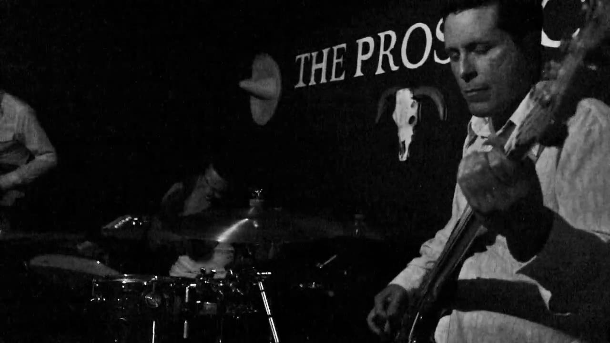
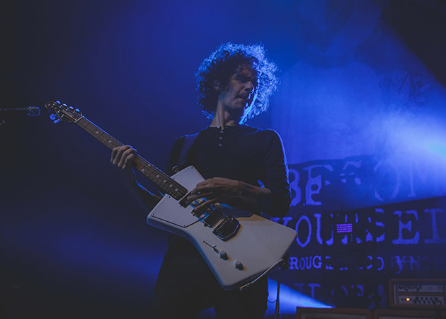

Vato Negro, lanzado en el 2008. La tónica sigue siendo la misma, puras improvisacionesalgunas de las cuales rebasan los 15 minutos de duración mientras que otras no llegan siquiera al minuto. Con el tiempo, Omar Rodríguez López se integraría a la banda y tendrían una rotación constante de bateristas hasta llegar a Deantoni Parks para convertirse en trío. En un sentido estricto, es un proyecto de Juan Alderete porque él fue el fundador de la banda, no Omar.
Venta de Boletos!

Paris
Viernes 22 de Diciembre 2017

Nueva York
Sábado 23 de Diciembre 2017

San Francisco
Domingo 24 Diciembre 2017
Queremos escucharte
Fan? Drop a note.
Chicago, US
Phone: +00 1515151515
Email: mail@mail.com
Alderete nació en Los Angeles, CA, el cuarto de cinco hijos. Estaba expuesto semanalmente a la música jazz por su padre, que era un gran admirador de la música jazz, y que a menudo la tocaba en la casa Alderete. Las otras influencias tempranas de Alderete incluyeron álbumes de rock progresivo de su hermano , que incluyeron bandas como Yes , Rush , King Crimson , etc. Comenzó a aprender los principios básicos del bajo cuando tenía 16 años, y fue influenciado por jugadores como Jaco Pastorius , Geddy Lee y Stanley Clarke . Su fascinación por el bajo giraba en torno a que era un instrumento algo "subestimado" en ese momento. Después de la escuela secundaria, Juan se inscribió en el Instituto de Músicos en Hollywood (Los Ángeles, CA). Disfrutó su tiempo en la escuela y explicó que pudo aprender técnicas y estilos que nunca había considerado antes de su inscripción. Juan y su compañero Paul Gilbert comenzaron su relación musical durante una audición que Paul sostuvo para encontrar un baterista. Juan apareció en la audición, trayendo a un estudiante del Instituto del Músico y amigo de la batería llamado Bill Lescohier. Aunque Lescohier fue rechazado por el papel, Paul quedó impresionado con el bajo de Juan; los dos buscaron rápidamente formar una banda de velocidad de metal que incorporaría el avanzado metal neoclásico de Paultécnica de guitarra con las líneas de bajo sólidas de Juan. Para completar la banda, Harry Gschoesser se unió para ocupar el puesto de baterista, y Jeff Martin se convirtió en el vocalista; el grupo se llamó a sí mismos Racer X (un título que Lescohier había sugerido). Con esta formación, la banda lanzó su álbum debut, Street Lethal , en 1986. Juan ha estado grabando con Racer X desde entonces (nota: hubo un paréntesis de diez años a partir de 1989), y su último álbum fue lanzado en 2002, titulado Getting Heavier . Juan es acreditado como John Alderete en todos los álbumes de Racer X. Sin embargo, cuatro años después de la creación de la banda, Paul Gilbert dejó Racer X para formar la banda Mr. Big . Los miembros restantes de Racer X decidieron mantenerse activos en la música, aunque siguieron caminos separados. Durante los próximos diez años, Juan estuvo involucrado en varias bandas diferentes (incluyendo The Scream, DC-10, Big Sir y Distortion Felix) y también se convirtió en instructor en Musicians Institute. Poco tiempo después, lanzó su primer video instructivo sobre técnicas de bajo y modulación .